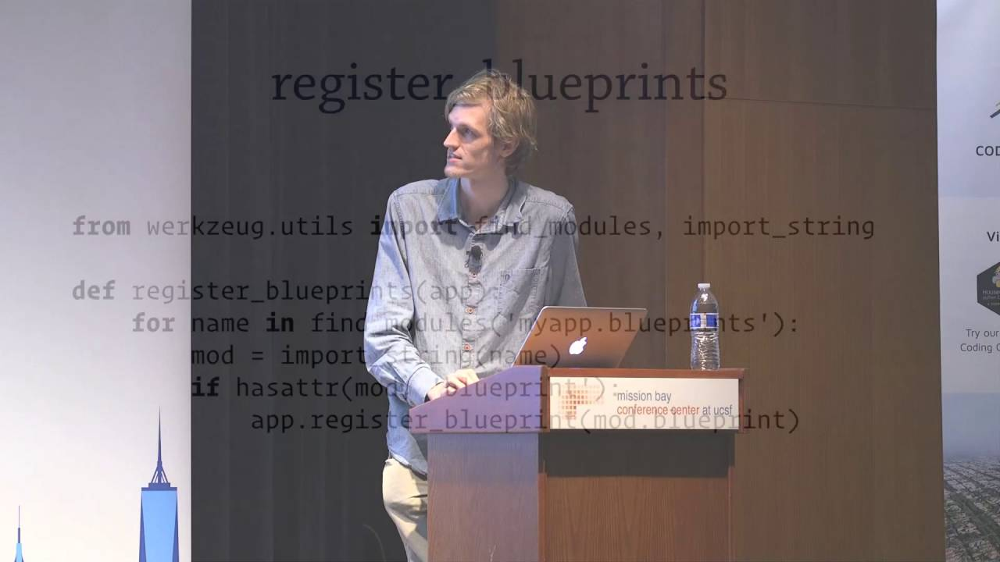

### Разработка flask приложений с использованием classy подхода <div><img src="http://qrcoder.ru/code/?https%3A%2F%2Fclck.ru%2FHpqd7&4&0" width="30%"></div> https://clck.ru/Hpqd7
## О чем я расскажу - Про способы роутинга - Про "классическую архитектуру" flask проектов - Про то как надо писать flask проекты - Про classy
## Способы машрутизации - url route (классический подход) - classy - traversal (pyramid, zope)
«Пишите код так, как будто сопровождать его будет склонный к насилию психопат, который знает, где вы живёте.» > Стив Макконнелл
 <div>Упссс, забыл....</div>
## Структура классического flask проекта ``` . ├── app │ ├── __init__.py │ ├── forms.py │ ├── models.py │ ├── views.py │ └── templates ├── config.py └── migrations ```
`microblog/app/__init__.py` ```python import flask from flask_mail import Mail # other extensions app = Flask(__name__) mail = Mail(app) # configure flask app from app import views, models ```
`microblog/app/views.py` ```python from flask import abort # other imports from app import app @app.route('/view_name/'): def view_name(): pass ```
## Минусы классической архитектуры - костыли для обхода циклического импорта - проект невозможно расширять - пропагандируется не правильное использование билиотек (sqlalchemy and etc)
## Структура проекта при использовании classy ``` . ├── app │ ├── static │ ├── templates │ ├── forms.py │ ├── routes.py │ ├── views.py │ └── tasks.py ├── models ├── app.py ├── config.py └── handlers.py ```
`microblog/app.py` ```python import flask from flask_mail import Mail # other extensions from app import route as app_route app = Flask(__name__) mail = Mail(app) # configure flask app app.register_blueprint(app_route.app_blueprint) ```
`microblog/app/routes.py` ```python from flask import Blueprint from app import views app_blueprint = Blueprint(...) views.AccountView.register(app_blueprint) # register other views ```
`microblog/app/views.py` ```python from flask_classy import FlaskView, route from flask_login import login_required class AccountView(FlaskView): def login(self): pass # other views @login_required def logout(self): pass ```
## classy подход ```python class ArticleView(FlaskView): # /article/ def index(self): return 'article index' # /article/all/ def all(self): return f'all article' # /article/user_article/1 def user_article(self, user_id): return f'user (id={user_id}) article' ```
## Парсинг аргументов
## RESTful
## Наследование
## Декораторы
## Вопросы - презентация: https://clck.ru/Hpqd7 - telegram: @petrunnik_a